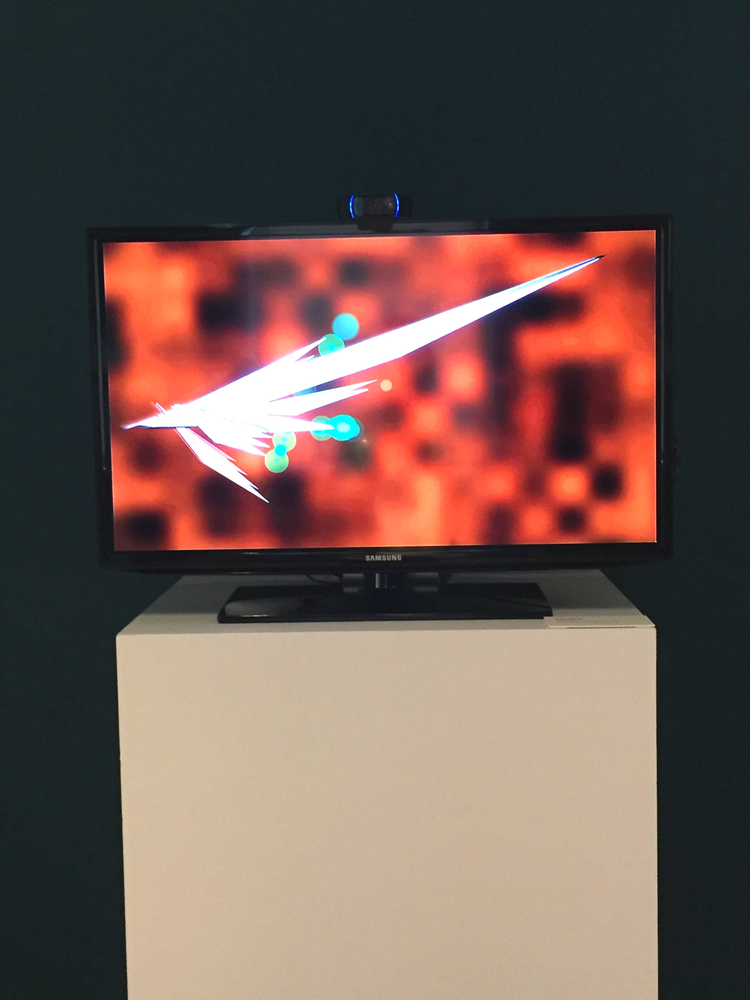

Interactive Code Art
This interactive, computational art installation was generated by custom software written in Processing. A webcam sitting atop the screen captures a continuous video feed, which is processed by a facial recognition algorithm. Found faces are tracked and mapped in real time to a 2D array of pixels, and translated to a reactive video display.
SPLIT
May 2016
Exhibited in a gallery show at the Williams College Museum of Art.
See the
source code on Github.
Brainstorming Process:
Drawing inspiration from the work of Camille Utterback and Theodore Watson, and Petros Vrellis' interactive Starry Night app.


I started out with some early sketches to work out the facial recognition and tracking. I experimented with reactive pattern-making and different abstract shapes and colors:


I was increasingly drawn to the overlapping, abstract shapes and the assertive, sharp edges of the triangles. In the final design, the long, blade-like triangles lance across the screen towards found faces (denoted by the green circles). As people move laterally through the space in front of the screen, the blades hastily reorient themselves.
